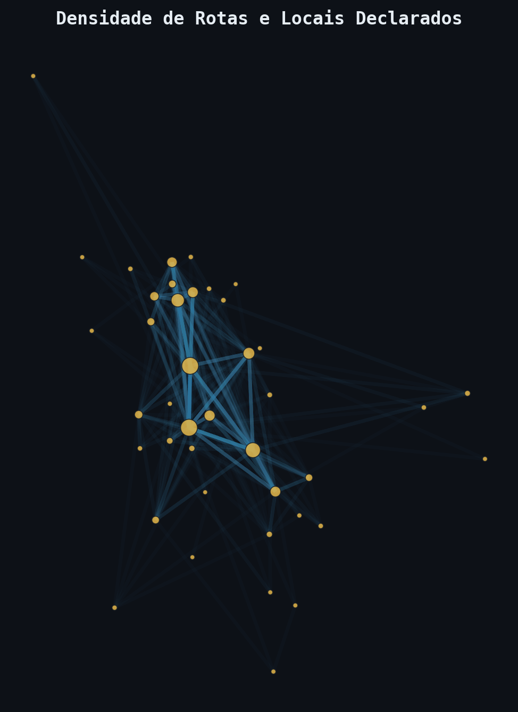
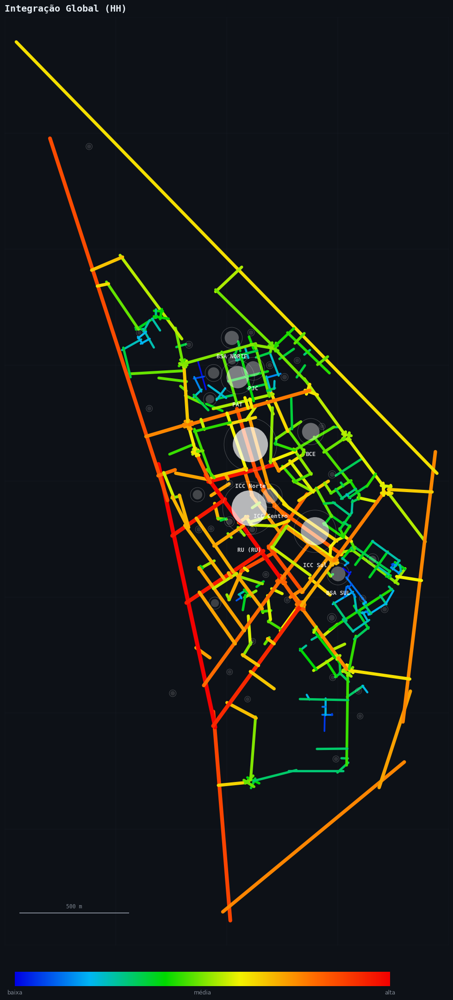
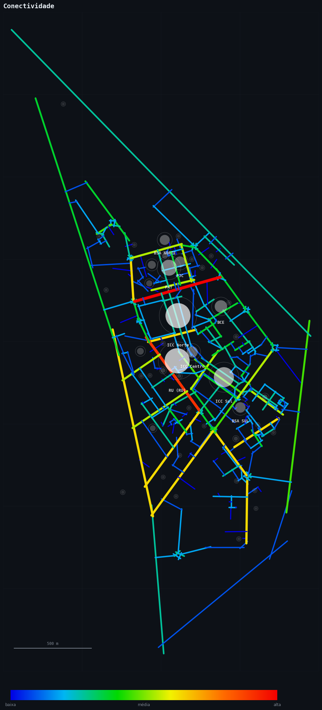
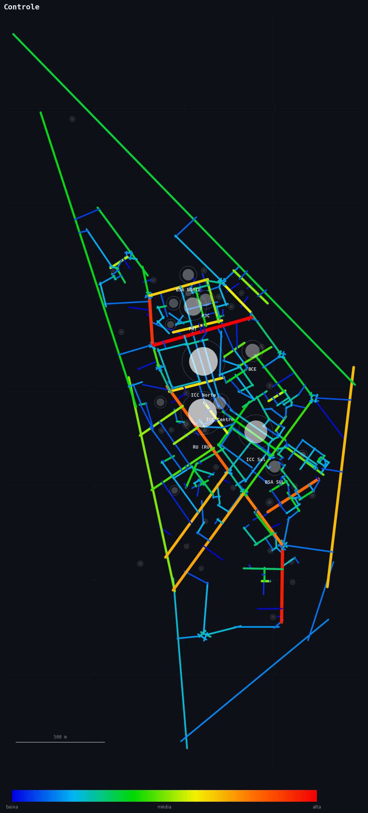
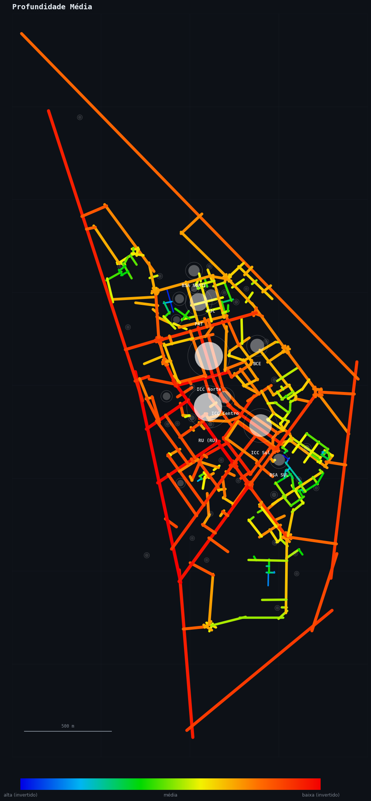
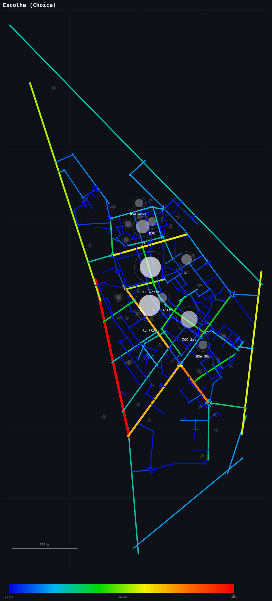

O que é? Facilidade de acesso. Mede quão "perto" uma via está de todas as outras.
Valores: Valores > 1.0 indicam eixos centrais e integrados (vermelho). < 0.8 indicam eixos periféricos (azul).
Contexto (Dissertação): A integração revela a estrutura primária de circulação que sustenta as atividades coletivas do campus.

O que é? Número de cruzamentos diretos que uma via possui.
Valores: Valores altos indicam cruzamentos importantes e distribuidores de fluxo. Valores baixos indicam vias isoladas.
Contexto (Dissertação): A alta conectividade no eixo do RU e ICC Sul corrobora a importância funcional desses pontos como hubs.

O que é? Avalia o quanto uma via domina o acesso às suas vizinhas.
Valores: Vias de alto controle são passagens obrigatórias para os eixos ao redor.
Contexto (Dissertação): Mostra áreas que controlam o fluxo de microescala, como entradas de estacionamentos.

O que é? Mede o esforço de circulação (número de mudanças de direção).
Valores: Quanto MENOR o valor (vermelho na escala invertida), mais acessível o local. Valores altos (azul) indicam locais "escondidos".
Contexto (Dissertação): Áreas com alta profundidade tendem a ser mais silenciosas e segregadas.

O que é? Potencial de atalho. Mede o uso de uma via nos caminhos mais curtos do sistema.
Valores: Valores elevados sinalizam eixos de grande fluxo de passagem (pedestres e carros).
Contexto (Dissertação): A análise de Choice permite distinguir vias de destino (Integração) de vias de passagem (Escolha).
